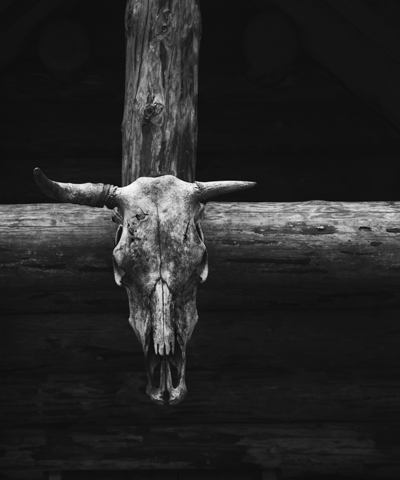

Vår Visjon
Her på Odins Front velger vi og se tilbake til det vi regner som vår storhetstid der vi ikke fryktet og bruke vår makt for og tjene folket, enkle verdier som er testet gjennom tusenvis av år som skapte hva vi har blitt i dag.
Flere har blitt interessert i vikinger og deres historie, og her viser vi den sanne, og ekte realiteten om hvordan vikingkulturen utfoldet seg. Her motsetter vi oss politisk korrekthet for vi mener alt har en mening, og gjennom besudling av tradisjoner og inkludering vanner vi ut essensen av hva som gjør vikinger til vikinger. Det er på tide og dra frem gamle måter og systemer som kan heve oss tilbake til vårt nivå som ekte vikinger.
 Ære
Din verdighet og ditt navn, ditt rykte og at ditt ord betyr noe
Trohet
Lojalitet til din familie, ekte nordiske verdier, og til vår felles sak. Vi er alle i hirden og holdes samlet for og fremme vår sak.
Ekte
Odins Front sier det slik det er, vi er ikke høytlønnete politikere som snakker i tunger, her viser vi den ekte nordmann formet gjennom salt, sjøluft, svette og blod.